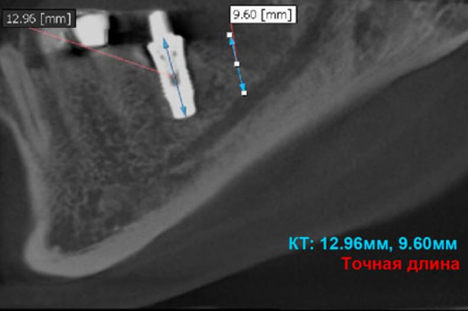
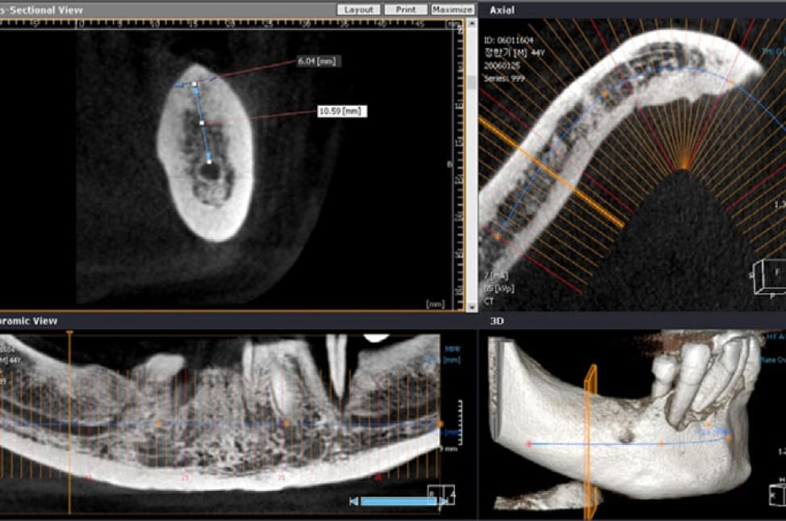

Что же скрыто от глаз стоматолога?
Использование рентгеновского излучения для диагностики зубочелюстной системы началось уже в 50-е годы – когда были созданы первые ортопантомографы в Японии и в Европе.
За последние полвека принципиально ничего не изменилось: излучатель (рентгентрубка) и приемник (пленка или сенсор) находятся на одной оси и вращаются вокруг объекта обследования (головы пациента). Конечно, метод постоянно совершенствовался: фиксированный центр вращения заменил свободный со смещением рентгентрубки, параметры излучения (напряжение, ток анода) уже автоматически корректируются в зависимости от конституции пациента, позиционирование пациента упростилось. Однако принципиальный базовый недостаток метода не позволяет ему оставаться стандартом современной диагностики: рентгеновское излучение проходит к приемнику через структуры с различной плотностью, и в результате на панорамном снимке все просканированные рентгеновским лучом слои складываются в усредненное двухмерное изображение. Полученные данные не дают Вам объективной картины. Невозможно точно оценить плотность кости в интересующей Вас области и провести достоверные измерения. Поэтому, утверждение «Мне все видно на панорамном снимке» является ошибочным по своему определению.
В последние пять лет во всем мире наблюдается стремительное развитие имплантологии. Многие из тех, кто серьезно занялся имплантологией или только пробуют свои силы в этой области, столкнулись с необходимостью качественной достоверной диагностики.
На самом деле, достоверная диагностика нужна стоматологу любой специализации: эндодонт сможет точно исследовать положение каналов и локализовать периапикальные воспаления, ортопед увидит точное положение ВНЧС, пародонтолог оценит уровень кости и ее плотность, ортодонт – сможет лучше локализовать положение зубов в кости и избежать травм. Однако до сих пор основным диагностическим инструментом стоматолога остается панорамный снимок (ортопантомограмма). Остановимся на некоторых наиболее характерных искажения этого метода.
Во-первых, геометрические искажения дает сам метод, из-за невозможности при вращении трубки в точности повторить контур челюсти для каждого пациента. Невозможность обеспечить одинаковый коэффициент увеличения приводит к необходимости коррекции измерений на панорамных снимках как минимум на 20% из-за погрешности метода.

Пример обследования одного и тоже же участка на ортопантомографе и на КТ
Во-вторых, дополнительные искажения дает некорректное позиционирование пациента, которое, прежде всего, может быть связано с анатомической индивидуальностью при позиционировании для получения правильной проекции. Даже незначительные смещения челюсти приводят к смещению фокусного пятна, в результате панорамный снимок будет сжат или растянут (при смещении вперёд - сжатие, при смещении назад - растягивание).
Кроме того, на получение геометрически правильной проекции влияет масса других факторов: запрокидывание головы, повороты головы по оси, корпусное смещение, артефакты (тени от посторонних предметов, просвет от не прижатого языка и т.п.), микродвижения пациента в момент экспозиции, нарушения при работе аппаратуры.
В-третьих, из-за различия в плотности тканей, попавших на пути рентгеновского луча, более плотная ткань (кортикальная и нёбная кости) накладываются и не позволяют просмотреть структуру менее плотной губчатой кости.
Иллюзия одинаковой плотности даже на участке с узким гребнем
На панорамном снимке нёбный отросток закрывает верхнечелюстные пазухи. Получить достоверную информацию можно только на КТ, сместившись на уровень необходимого слоя.
ОПГ и выявленная с помощью КТ одонтогенная киста в области 26 зуба диаметром 13 мм в гайморовой пазухе, причём нёбный и дистальный щечный корни выстоят в полость кисты.
В-четвертых, ортопантомограмма это двухмерный снимок (оси X, Y), в котором совсем отсутствует информацияо третьей координате (ось Z), которая несет информацию о форме костного гребня и структуре кости на интересуемом уровне. Это особенно важно, когда необходимо точно определить положение и провести необходимые измерения, оценить расстояние до нижнечелюстного канала для успешной имплантации на нижней челюсти.
На панорамном снимке видна идеальная установка имплантата. Анализ постановки импланта с помощью КТ выявил ошибки установки.
В наиболее продвинутых современных моделях ортопантомографов есть функция линейной томограммы. В основе этого метода лежит изменение глубины фокусного слоя на интересуемом участке. Конечно, подобная функция позволяет оценить расстояние до гайморовой пазухи или лучше определить положение ретинированного зуба. Однако, судить о плотности тканей и, тем более, проводить точные измерения вряд ли получится, так как во-первых, получение линейной томограммы на панорамном аппарате требует специальных навыков и знаний и 90% врачей-стоматологов просто не смогут её делать, а во-вторых, сам метод дает ограничения – размытые (не в фокусе) двухмерные слои не укрепляют уверенности в достоверности и точности проводимых измерений на этапе планирования операции.
Кросс-секции, полученные с помощью функции линейной томограммы современного цифрового ортопантомографа
В результате напрашивается вывод: ортопантомограмма это вспомогательный инструмент для консультации первичного пациента, предоставляющая общую обзорную картину, и позволяющая выявлять только явные патологии.
Возникает острая необходимость КТ диагностики, которая дает ответ практически на любой вопрос – что же скрыто от ваших глаз?
Первый КТ сканер на рентгеновских лучах был представлен миру еще в 1967 году, а уже в 1971 году в Англии был показан прототип современных томографов – с оборотом на 180° сканировали 60 слоев с временем сканирования одного слоя более пяти минут. Общее время сканирования занимало около 2,5 часов, и при этом приемная матрица была всего 80х80 пиксель. Понятно, что о применении подобной диагностики для медицины не могло быть и речи из-за низкого разрешения, длительности обследования и высокой дозы облучения.
За 40-летнюю историю уже сменилось семь поколений КТ. Технологи добивались уменьшения времени сканирования с одновременным повышением разрешения изображения. Самый популярный сейчас спиральный томограф был впервые представлен в 1990 году. Современные модели спиральных КТ делают три вращения трубки в секунду и дают превосходное разрешении, благодаря развитию полупроводниковых и компьютерных технологий, однако лучевая нагрузка при сканировании для стоматологии всё ещё слишком высока – около 1500 мкЗв. Прежде всего этот фактор, а также более простая конструкция, и соответственно, стоимость устройства, привели к появлению и быстрому развитию конусно-лучевых КТ, лучевая нагрузка при обследовании на которых сопоставима с нагрузкой при получении ортопантомограммы - 25..60 мкЗв.
Суть метода конусно-лучевого КТ довольно проста: приемник (цифровой детектор) и излучатель (рентгентрубка) расположены на одной оси и вращаются одновременно вокруг объекта обследования (голова пациента). Излучатель короткими импульсами распространяет конусный луч с фокусом, настроенным таким образом, чтобы проходя через ткани, на детектор попадала информация о каждом слое, попавшем на пути луча. Плоский детектор воспринимает всей своей поверхностью информацию о всех слоях через которые проходит конусный рентгеновский луч и передает эти данные порциями на блок электронного захвата, из которого уже цифровые данные попадают в компьютер для мультипланарной реконструкции (MPR). Результатом этой обработки будет виртуальный 3D-объект, в точности соответствующий каждым своим слоем реально просканированному конусным лучом объекту.

Различные размеры плоского детектора: 3х3 см, 4х4 см, 5х5 см, 8х5 см, 12х7 см, 15х15 см, 20х15 и 20х20 см могут давать реконструкцию различной области. При этом качество (разрешение) получаемой информации напрямую зависит от времени сканирования и, соответственно пациент получает различную лучевую нагрузку. Это один из компромиссов, который существует в современной цифровой рентендиагностике – получать хорошее качество изображения, достаточное для достоверной диагностики, при этом минимально облучая пациента.
Сейчас уже началась реальная конкуренция между производителями конусно-лучевых КТ для стоматологии, которая неизбежно будет способствовать улучшению качества, увеличению области сканирования, уменьшению лучевой нагрузки и снижению цены.
Не вдаваясь в технические особенности, хочу только заметить, что представляемые нашей компанией на Украине конусно-лучевые КТ компании Vatech&E-WOO(Корея) предполагают выбор из несколько моделей с различной областью сканирования (от 5х5 см до 24х19 см), отличительными особенностями которых является разумная цена при высоком технологическом уровне исполнения и качестве. Нами поставлены на Украину уже 28 конусно-лучевых дентальных КТ Vatech&E-WOO (Киев, Днепропетровск, Запорожье, Одесса, Львов, Донецк, Харьков). Все они безупречно работают и дают хорошие диагностические результаты.
Приглашаем к сотрудничеству всех врачей, заинтересованных в получении достоверной диагностики.